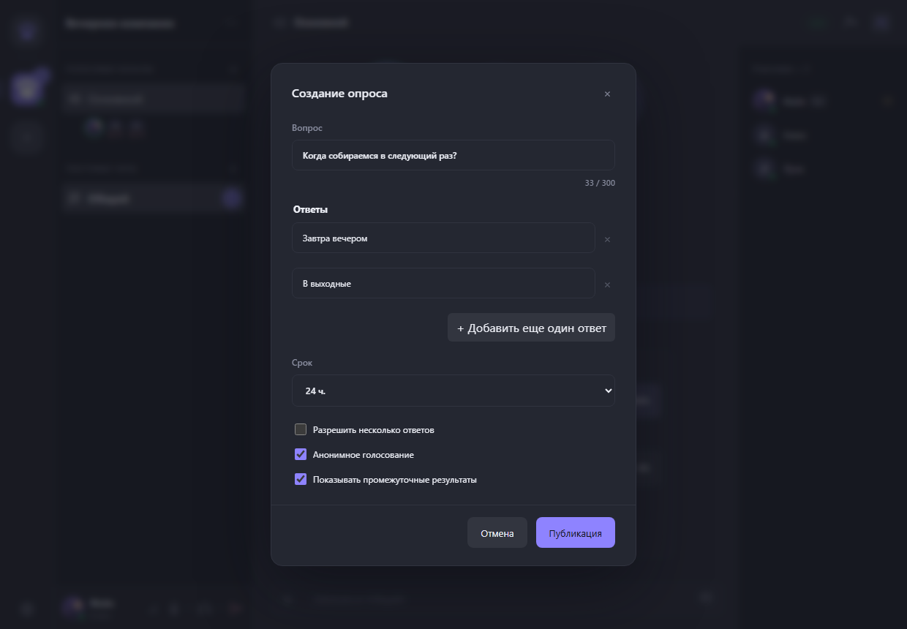
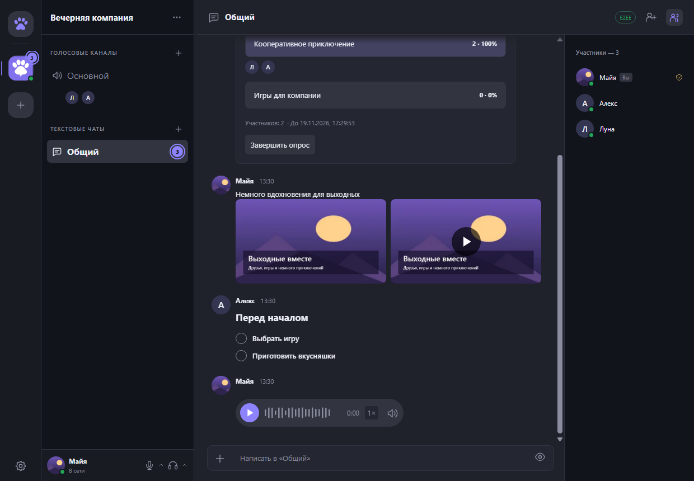
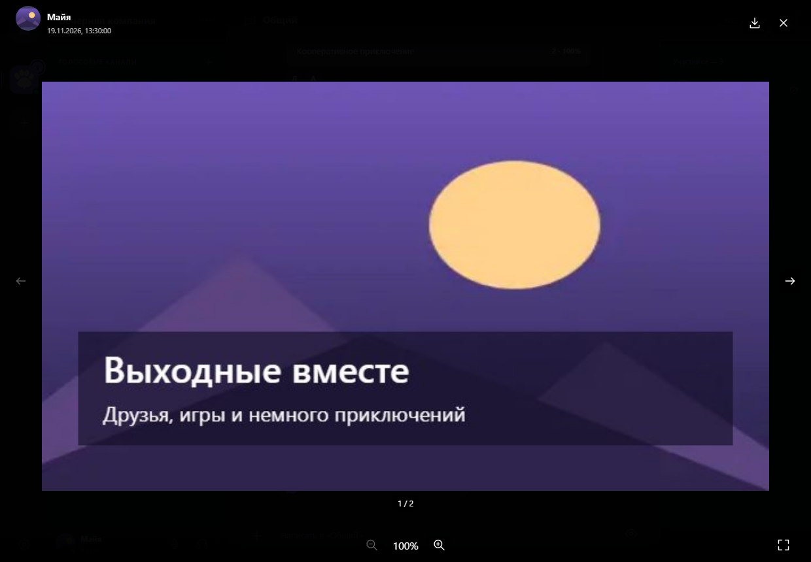
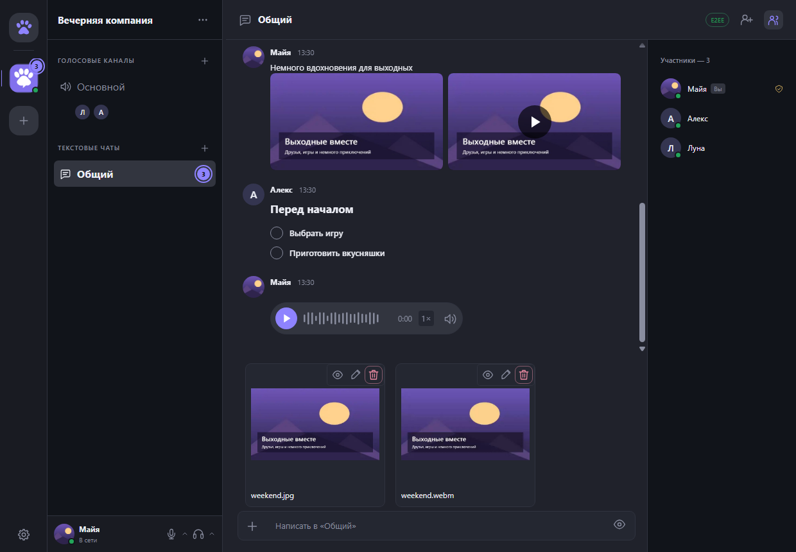
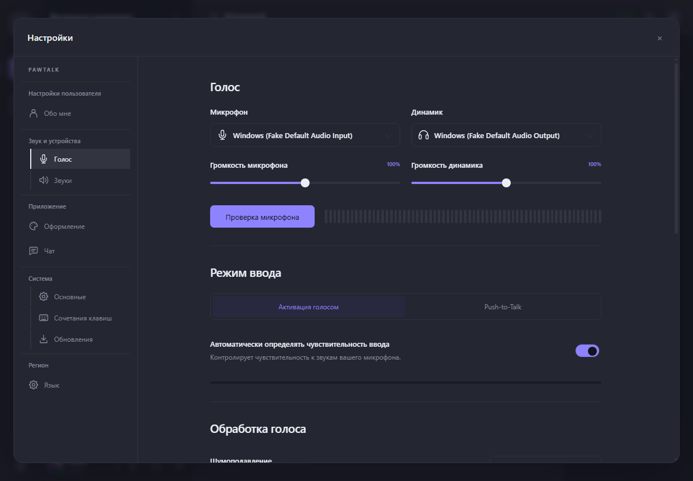
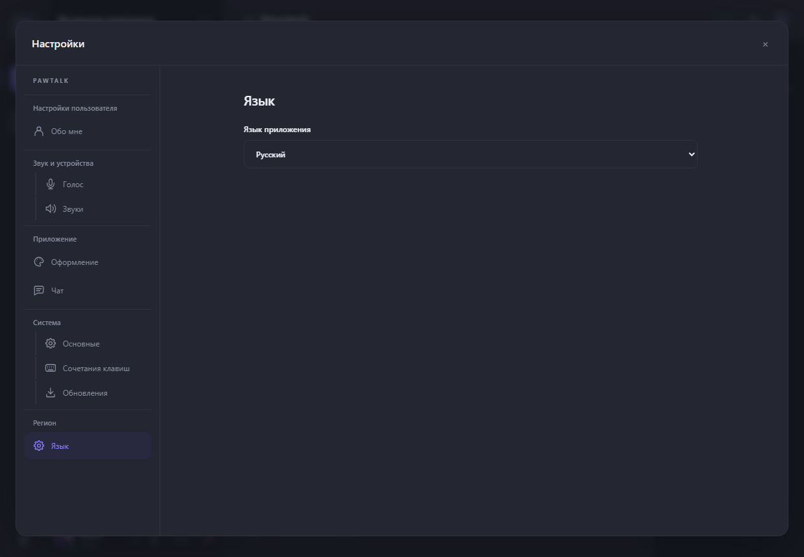
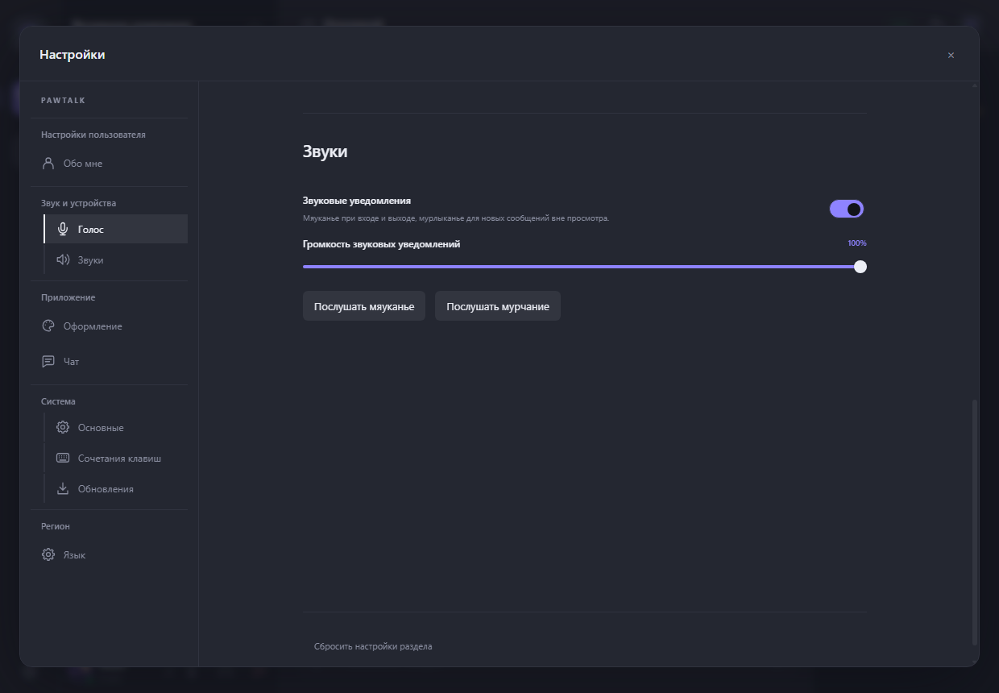

Размещайте у себя
Временный Server из Windows-клиента или постоянный Server под управлением Manager на Windows/Linux. Гостям достаточно установить клиент.
Откройте голосовую комнату на вечер или запустите постоянный сервер для сообщества. Общайтесь, стройте планы и делитесь фото в одном месте. Друзья подключаются по приглашению и выбирают никнейм.
Публичная предварительная версия · Client Windows x64 · Manager Windows/Linux
Опубликованные версии: Client · Server · Manager
Установщик без цифровой подписи · Проверяемое автообновление · Описание выпуска, SHA-256 и исходники

Временный Server из Windows-клиента или постоянный Server под управлением Manager на Windows/Linux. Гостям достаточно установить клиент.
Локальное шумоподавление RNNoise, эхоподавление и автоусиление. Выбирайте устройства, чувствительность и громкость.
Создавайте отдельные голосовые и текстовые каналы для разных групп. На защищённых серверах доступ регулируется ролями и персональными разрешениями.
Выберите источник и качество. На поддерживаемых конфигурациях Windows можно передавать звук приложения или системы.
Откройте общий обзор или выберите один стрим, оставив остальные в ряду миниатюр. Стрим в фокусе можно развернуть на весь экран.
Меняйте размер чата под звонком, переносите его вправо или скрывайте. Для демонстрации экрана нужны Client 0.16.0 и совместимый хост, например Server 0.15.0.
Меняйте высоту голосовой панели и чата. Отвечайте на сообщения, форматируйте выделенный текст и редактируйте свои сообщения. В защищённых чатах на совместимых серверах доступны закрепления и цветные упоминания ролей.
Отключите уведомления чата, когда нужна тишина. Уведомления Windows показывают аватар отправителя, а значок на панели задач — количество активных уведомлений.
Выберите личный аватар, а администраторы могут установить общую картинку сервера. При кадрировании видны границы квадрата и круглая безопасная область.
Создайте опрос на срок от часа до двух недель. Разрешите несколько ответов, выберите анонимное голосование и решите, показывать ли промежуточные результаты. Участники могут менять и отменять голоса; в открытом голосовании видны их аватарки.
Автор может завершить опрос досрочно. По окончании в чат приходит отдельный системный ответ со ссылкой на итог. Завершённый опрос и его результат участники удалить не могут.

Отправляйте до десяти вложений компактной сеткой в два столбца. Запишите голосовое прямо в строке ввода и переслушайте до отправки. Добавляйте исходные фото и видео до 128 МиБ. PawTalk сжимает крупные фотографии и видео поддерживаемых форматов длительностью до двух минут до лимита загрузки сервера.
Распределяйте задачи в интерактивном списке и сразу видьте, что уже сделано.

Открывайте фото и видео в одном просмотрщике: автор и дата, скачивание, переключение вложений и настоящий полный экран. Приближайте фото, листайте галерею клавишами ← и → или управляйте воспроизведением и громкостью видео.
Миниатюры загружаются отдельно, поэтому можно просмотреть ленту перед открытием вложения.

Перетащите файлы на любую область окна с открытым чатом. Просмотрите, переименуйте или удалите каждое вложение, затем добавьте сообщение.
Предпросмотр форматирования заменяет поле ввода на том же месте. Markdown-инструменты по наведению предлагают заголовки, списки и код; таблицы можно набирать вручную.

Установите клиент на каждый Windows-ПК и выберите Русский или English. В настройках задайте никнейм, выберите устройства и проверьте микрофон. Инструменты разработчика не нужны.
Выберите «Создать сервер», задайте название. Создатель автоматически становится администратором. Новые временные комнаты используют защищённый доступ с отдельными ключами каналов. Временный сервер работает до остановки хоста.
Передайте полное приглашение лично. Друг вставляет ссылку через «Присоединиться к серверу». Для голоса затем выберите голосовой канал: вступление само по себе не включает микрофон.
Для связи через интернет нужны доступные порты хоста. Автопроброс может не сработать при CGNAT. Альтернатива — постоянный Server под управлением Manager на Windows или Linux с публичным IP. Полная инструкция →
В «Звук и устройства → Голос» выберите микрофон и динамики, попробуйте шумоподавление и прослушайте микрофон. Используйте активацию голосом или push-to-talk и регулируйте громкость каждого участника во время звонка.
Порты хоста по умолчанию: TCP 18443, TCP 18444, UDP 18445. В руководстве сервера описаны проверки firewall и доступности.

Выберите Русский или English в разделе «Настройки → Язык». В настройках с боковой навигацией доступны светлая тема, цветовая палитра и скругления. Подсказки соединения и сообщения используют выбранный язык.
В «Система → Обновления» автопроверку можно отключить или запустить вручную; текущая версия показана рядом. Обновление можно отложить и открыть снова по иконке. Файл проверяется перед установкой, а отдельное окно показывает её ход.
Версии Client, Server и Manager выпускаются независимо. Перед обновлением постоянного сервера проверьте совместимость опубликованных выпусков.

Это ранний выпуск. Реальные микрофоны, чистая установка Windows, игры/PTT, разные внешние сети и полная нагрузка ещё требуют аппаратной приёмки.
Клиент работает только на Windows. Linux — серверная платформа. Видеозвонки, демонстрация экрана, веб- и мобильные клиенты пока недоступны. Фото, видеовложения и голосовые сообщения поддерживаются совместимыми Client и Server.
Голос, сообщения и вложения защищены сквозным шифрованием. API 3 использует отдельные ключи каналов и меняет их при отзыве доступа. Сервер видит метаданные, а получатели сохраняют уже доставленные копии. Перед миграцией комнаты API 2 проверьте совместимость. Границы защиты.
В «Звук и устройства → Звуки» доступны общая громкость уведомлений, прослушивание мяуканья и мурчания и отключение звуков. Голос и Звуки находятся на общей странице; Система объединяет автозапуск, горячие клавиши и обновления.

Для небольших голосовых комнат на своём сервере — это целевой сценарий. PawTalk сосредоточен на разговорах без регистрации и не заменяет все возможности этих платформ для сообществ.
Голос идёт по WebRTC через медиасервер LiveKit на ПК хоста или вашем VPS. Гостям нужен Windows-клиент, разворачивать свой сервер не требуется.
Убедитесь, что комната работает, а приглашение актуально. В одной сети используйте LAN-приглашение. Через интернет проверьте входящие порты, firewall, проброс на роутере и VPN. При CGNAT может понадобиться доступный извне VPS. См. руководство по сети.
PawTalk проверяет новые выпуски при запуске и проверяет установщик до предложения. Ошибки и вопросы настройки отправляйте через GitHub Issues. Укажите версию и шаги воспроизведения; удалите приглашения, E2EE-ключи и личную сетевую информацию.
Собственный код проекта распространяется по GNU AGPL-3.0-only. Условия использования указаны в лицензии и уведомлениях сторонних компонентов.